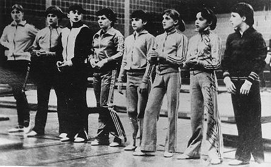

Marilena Neacsu (ROM)
1978 World Team Silver Medalist

Neacsu (third from left) and her teammates in West Germany, 1978, prior to the World Championships.
Medal Total
World Championships: 1 Silver
Marilena was born on August 14, 1961 in Sibiu and was discovered by coaches Cristl Voiciulescu and Nicolae Buzuoianu at the age of 10. She appeared in the 1990 Romanian/French film "Reach for the Sky" and works as a coach in Canada.
Competition Results
1973
Federation Cup: 1st AA (Cat. II)
1975
International Championships of Romania: 5th AA
Jr. ROM-USSR Dual Meet: 2nd Team, 2nd AA
ROM-HUN-RSFSR: 6th AA
1976
ROM-PRK Dual Meet: 1st Team, 5th AA
USA-ROM Dual Meet: 1st Team, 12th AA
1977
Balkan Championships: 3rd AA
Chunichi Cup: 6th AA
ESP-ROM Dual Meet: 1st Team, 3rd AA
European Championships: 10th AA
International Championships of Romania: 4th AA, 2nd V
Orleans International: 4th AA
Romanian Championships: 2nd AA
USA-ROM Dual Meet: 1st Team, 5th AA
1978
Champions All: 2nd AA
FRG-ROM Dual Meet: 1st Team, 2nd AA
International Champs. of Romania: 1st AA, 1st B, 2nd UB, 3rd FX
ITA-ROM Dual Meet: 1st Team, 2nd AA
Milan International: 2nd AA
Romanian Championships: 6th AA, 1st FX
ROM-FRA Dual Meet: 1st Team
World Championships: 2nd Team, 14th AA
1979
International Championships of Romania: 11th AA
1980
Hungarian International: 8th AA
International Championships of Romania: 9th AA
This page was created on December
24, 2004 and was last updated on May 19, 2018.
© Gym Forum